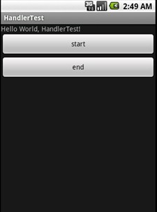
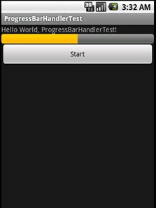

Android Handler的使用(一)
Handler基本概念：
Handler主要用于异步消息的处理：当发出一个消息之后，首先进入一个消息队列，发送消息的函数即刻返回，而另外一个部分逐个的在消息队列中将消息取出，然后对消息进行出来，就是发送消息和接收消息不是同步的处理。 这种机制通常用来处理相对耗时比较长的操作。
使用一个例子简单的来介绍一下Handler。
示例1：一个应用程序中有2个按钮（start、end），当点击start按钮时，执行一个线程，这个线程在控制台输出一串字符串，并且每隔3秒再执行一次线程，直到点击end按钮为止，线程停止。
下图为这个应用程序的界面：

开发步骤：
1、 新建一个Android应用程序 。
2、 在布局文件中添加2个Button控件标签，并为其设置属性和值。
3、 在Activity中，声明控件变量并根据id获得控件对象。
4、 在Activity中，创建一个Handler对象。
5、 在Activity中，创建一个Runnable对象。
a) 以匿名内部类的方式。
b) 将要执行的操作写在Runnable对象中的run()方法中。
i. 打印出一句话。
ii. 调用Runnable对象的postDelayed()方法。
6、 在Activity中，编写start按钮需要的监听器，并绑定。
a) 在这个监听器的Onclick()方法中，调用Handler的post()方法，将要执行的线程对象放到队列当中。
7、 在Activity中，编写end按钮需要的监听器，并帮定。
a) 在这个监听器的Onclick()方法中，调用Handler的removeCallbacks ()方法，删除队列当中未执行的线程对象。
b)
下面是Activity的代码：
Java代码：
import android.app.Activity;import android.os.Bundle;
import android.os.Handler;
import android.view.View;
import android.view.View.OnClickListener;
import android.widget.Button;
public class HandlerTest extends Activity {
/** Called when the activity is first created. */
private Button startButton;
private Button endButton;
@Override
public void onCreate(Bundle savedInstanceState) {
super.onCreate(savedInstanceState);
setContentView(R.layout.main);
// 根据id获得控件对象
startButton = (Button) findViewById(R.id.startButton);
endButton = (Button) findViewById(R.id.endButton);
// 为控件设置监听器
startButton.setOnClickListener(new StartButtonListener());
endButton.setOnClickListener(new EndButtonListener());
}
class StartButtonListener implements OnClickListener {
public void onClick(View v) {
// 调用Handler的post()方法，将要执行的线程对象放到队列当中
handler.post(updateThread);
}
}
class EndButtonListener implements OnClickListener {
public void onClick(View v) {
// 调用Handler的removeCallbacks()方法，删除队列当中未执行的线程对象
handler.removeCallbacks(updateThread);
}
}
// 创建Handler对象
Handler handler = new Handler();
// 新建一个线程对象
Runnable updateThread = new Runnable() {
// 将要执行的操作写在线程对象的run方法当中
public void run() {
System.out.println("updateThread");
// 调用Handler的postDelayed()方法
// 这个方法的作用是：将要执行的线程对象放入到队列当中，待时间结束后，运行制定的线程对象
// 第一个参数是Runnable类型：将要执行的线程对象
// 第二个参数是long类型：延迟的时间，以毫秒为单位
handler.postDelayed(updateThread, 3000);
}
};
}
上面是一个最简单的例子，下面再看另外一个例子。
示例2：一个应用程序中有一个进度条和一个按钮，当点击按钮后，每隔一秒钟进度条前进一部分。
下图为应用程序的运行效果图：

开发步骤：
1、 新建一个Android应用程序。
2、 在布局文件中添加一个progressBar和一个Button，并为其设置属性和值。
3、 在Activity中，声明控件变量并根据id获得控件对象。
4、 创建线程对象。
a) 通过匿名内部类的方式。
b) 在编写完了5、6步之后再来继续编写这个线程对象里的操作。
i. 声明一个变量用来设置进度条的进度。
ii. 重写线程类的run方法()，里面编写要执行的操作。
1. 打印一个字符串。
2. 进度条的值增加。
3. 得到一个消息对象。
4. 设置消息对象arg1的值。
5. 让线程休眠一秒钟。
6. 将消息对象放入到消息队列中。
7. 判断，如果进度条的值等于100，则将线程对象从队列中移除。
5、 创建Handler对象。
a) 与示例1不同的地方是，这里是通过匿名内部类的方式来声明的，而示例1是直接new出来的对象。
b) 重写Handler对象的handlerMessage(Message msg)方法。
i. 这个方法传入了一个Message对象，即消息对象，首先设置进度条的进度（这个值是Messag对象里面的一个成员变量arg1）。
ii. 将要执行的线程对象放入到队列当中
6、 编写Button需要的监听器，并绑定
a) 设置进度条为显示状态
b) 将要执行的线程对象放入到队列当中
import android.app.Activity;import android.os.Bundle;
import android.os.Handler;
import android.os.Message;
import android.view.View;
import android.view.View.OnClickListener;
import android.widget.Button;
import android.widget.ProgressBar;
public class ProgressBarHandlerTest extends Activity {
/** Called when the activity is first created. */
private ProgressBar progressBar;
private Button startButton;
@Override
public void onCreate(Bundle savedInstanceState) {
super.onCreate(savedInstanceState);
setContentView(R.layout.main);
progressBar = (ProgressBar) findViewById(R.id.progressbar);
startButton = (Button) findViewById(R.id.startButton);
startButton.setOnClickListener(new ProgressBarOnClickListener());
}
class ProgressBarOnClickListener implements OnClickListener {
public void onClick(View v) {
// 设置进度条为可见状态
progressBar.setVisibility(View.VISIBLE);
updateBarHandler.post(updateThread);
}
}
// 使用匿名内部类来复写Handler当中的handlerMessage()方法
Handler updateBarHandler = new Handler() {
@Override
public void handleMessage(Message msg) {
progressBar.setProgress(msg.arg1);
updateBarHandler.post(updateThread); // 将要执行的线程放入到队列当中
}
};
// 线程类，该类使用匿名内部类的方式进行声明
Runnable updateThread = new Runnable() {
int i = 0;
public void run() {
// TODO Auto-generated method stub
System.out.println("Begin Thread");
i += 10;
// 得到一个消息对象，Message类是android系统提供的
Message msg = updateBarHandler.obtainMessage();
// 将Message对象的arg1参数的值设置为i
msg.arg1 = i; // 用arg1、arg2这两个成员变量传递消息，优点是系统性能消耗较少
try {
Thread.sleep(1000); // 让当前线程休眠1000毫秒
} catch (InterruptedException ex) {
ex.printStackTrace();
}
// 将Message对象加入到消息队列当中
updateBarHandler.sendMessage(msg);
// 如果i的值等于100
if (i == 100) {
// 将线程对象从队列中移除
updateBarHandler.removeCallbacks(updateThread);
}
}
};
}